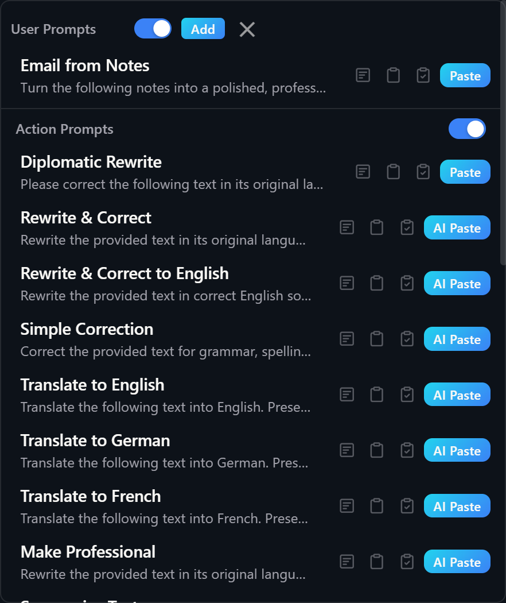

Prompt Library
Browse, manage, and execute saved prompts from a searchable library

Overview
The Prompt Library is a centralized, searchable collection of all your prompts. It aggregates prompts from four sources: User Prompts, Action Prompts, Quick Prompts, and Connection System Prompts. You can open it from the main panel footer, via a keyboard hotkey, or via a mouse trigger.
The library has two variants. The panel variant opens as a popover or modal inside the main window. The overlay variant opens as a separate floating window positioned near your cursor, without stealing focus from the app you are working in. Enabled sections always appear at the top of the list; disabled sections are sorted to the bottom.
Opening the Prompt Library
Three methods are available:
| Method | How to use | Result |
|---|---|---|
| Footer link | Click "Prompt Library" in the main panel footer | Opens as a modal inside the main panel window |
| Hotkey | Press the configured hotkey (configurable in Settings > General) | Opens as a floating overlay window near your cursor |
| Mouse trigger | Perform the configured mouse gesture (configurable in Settings > General) | Opens as a floating overlay window near your cursor |
Prompt Types
Prompts are organized into four sections. Each section has a toggle switch that shows or hides it. Enabled sections are sorted to the top; disabled sections move to the bottom.
| Section | Source | Editable here |
|---|---|---|
| User Prompts | Your custom prompts, stored locally on your device | Yes — add, edit, delete |
| Action Prompts | Prompts from your configured actions | Read-only — edit in Settings > Actions |
| Quick Prompts | Prompts from your Quick Prompt buttons (enabled only) | Read-only — edit in Settings > Quick Prompts |
| Connection Prompts | System prompts from your connections | Read-only — edit in Settings > Connections |
Managing User Prompts
User Prompts are the only category you can create and modify directly inside the Prompt Library. Each user prompt has a short label and a full prompt text.
| Action | How |
|---|---|
| Add | Click the Add button in the User Prompts section header (or in the overlay top bar). An inline form appears with a label field and a text area. Fill in both fields and click Done to save. |
| Edit | Click the Edit button on any user prompt row. The inline form opens pre-filled with the existing label and text. Change what you need and click Done. |
| Delete | Click the Delete button on any user prompt row, or click Delete inside the edit form to remove the prompt being edited. |
| Export data | Click the download icon button in the library footer. This saves a full data bundle (actions, user prompts, connections, quick prompts, and settings) as a JSON file for backup or transfer. |
Using Prompts
Clicking a prompt row selects it. What happens next depends on which variant is open.
Panel variant
Clicking a prompt row fills the prompt input area in the main window with the prompt text and closes the library. You can review or edit the text before running it.
Overlay variant
In the overlay, each prompt row shows execution buttons so you can run the prompt immediately without switching back to the main panel.
| Button | What it does |
|---|---|
| Overlay (window icon) | Executes the prompt and shows the result in the Result Pop-Up Window. For actions, uses overlay execution mode. For static text, shows the raw text in the result overlay. |
| Clipboard (clipboard icon) | Executes the prompt and copies the result to the clipboard. For static text, copies the raw text directly. |
| Paste + Clipboard (clipboard with checkmark) | Executes the prompt, pastes the result into the active app, and also keeps it on the clipboard. |
| AI Paste | Executes the prompt through the PromptBar AI paste flow. Shown for AI-capable prompts: Quick Prompts and AI Transform actions. |
| Paste | Pastes the raw prompt text directly into the active app without any AI processing. Shown for non-AI prompts: static text, local transform actions, and user or connection prompts. |
Overlay Variant
The floating overlay is a standalone window that appears near your cursor and auto-resizes its height to fit the current content, up to a maximum height.
- Top bar: Contains the User Prompts section toggle, an Add button (when User Prompts is enabled), and a Close (X) button.
- Prompt sections: The same four category sections as the panel variant, each with its own toggle switch.
- Focus behavior: The overlay is non-focusable by default. When you start editing a user prompt (clicking Add or Edit), the overlay temporarily becomes focusable so you can type in the input fields. Focus returns to the previous window when you save or cancel.
- Dismissing: Click the X button, press Escape, or trigger the hotkey a second time.
- Screen-aware positioning: The overlay is clamped to stay fully within the monitor that contains the cursor.
- Scale: The overlay has its own independent scale (PL Overlay Scale), separate from the main panel UI scale.
Configuration
All Prompt Library settings are in Settings > General. The hotkey and mouse trigger can also be changed from the Prompt Library footer. Default section visibility: User Prompts on, Action Prompts on, Quick Prompts off, Connection Prompts off.
| Setting | Default | Description |
|---|---|---|
| Hotkey | — | Global keyboard shortcut to open or close the Prompt Library overlay. Click the hotkey display to open the Hotkey Editor. Conflict detection warns you if the hotkey overlaps with an existing action or the main trigger. |
| Mouse trigger | — | Mouse gesture to open or close the Prompt Library overlay. Click the mouse icon button to open the Mouse Trigger Editor. Conflict detection warns you if the gesture is already used by another action or the main trigger. |
| Show User Prompts | On | Toggle the User Prompts section in the library. |
| Show Action Prompts | On | Toggle the Action Prompts section in the library. |
| Show Quick Prompts | Off | Toggle the Quick Prompts section in the library. |
| Show Connection Prompts | Off | Toggle the Connection System Prompts section in the library. |
| Overlay Show Edit/Delete | Off | When enabled, Edit and Delete buttons appear on user prompt rows in the floating overlay variant. |
| PL Overlay Scale | 1.4× | Zoom level of the floating overlay window. Range: 1.0×–3.0×. Independent from the main panel UI scale and the Result Pop-Up Window scale. |
Interactive Elements Reference
| Element | Location | Action |
|---|---|---|
| User Prompts toggle | Section header / overlay top bar | Show or hide the User Prompts section |
| Action Prompts toggle | Section header | Show or hide the Action Prompts section |
| Quick Prompts toggle | Section header | Show or hide the Quick Prompts section |
| Connection Prompts toggle | Section header | Show or hide the Connection Prompts section |
| Add button | User Prompts section header (panel) / overlay top bar | Open an inline form to create a new user prompt |
| Edit button | Per user prompt row | Open the inline edit form pre-filled with the prompt's existing label and text |
| Delete button (row) | Per user prompt row | Delete the user prompt immediately |
| Label input | Inline add / edit form | Enter the short display name for the prompt |
| Text textarea | Inline add / edit form | Enter the full prompt text |
| Done button | Inline add / edit form | Save the prompt (requires non-empty label and text) |
| Cancel button | Inline add / edit form | Discard changes and close the form |
| Delete button (form) | Inline edit form only | Delete the prompt currently being edited |
| Overlay execute button | Per prompt row (overlay variant) | Execute and show result in the Result Pop-Up Window |
| Clipboard execute button | Per prompt row (overlay variant) | Execute and copy result to clipboard |
| Paste + Clipboard button | Per prompt row (overlay variant) | Execute, paste result, and copy result to clipboard |
| AI Paste button | Per prompt row, AI prompts only (overlay variant) | Execute through the PromptBar AI paste flow |
| Paste button | Per prompt row, non-AI prompts only (overlay variant) | Paste the raw prompt text into the active app |
| Prompt row click | Any prompt row (panel variant) | Fill the main window prompt input with this prompt text and close the library |
| Hotkey editor button | Library footer | Open the Hotkey Editor modal to assign or clear the PL hotkey |
| Mouse trigger editor button | Library footer (mouse icon) | Open the Mouse Trigger Editor modal to assign or clear the mouse gesture |
| Export data download button | Library footer (download icon) | Save a full data bundle JSON backup file |
| Close (X) button | Overlay top bar | Hide the floating overlay and restore focus to the previous window |
| Modal backdrop | Modal variant only | Click outside the library to close it |
Related
- Actions — Configure action prompts and per-action execution behavior.
- Connections — Manage AI provider connections and their system prompts.
- Settings — General settings including overlay scale, section visibility, hotkey, and mouse trigger.
- Main Window — The panel where selected prompts are filled for editing.
- Result Pop-Up Window — Where prompt execution results appear in overlay mode.
- Keyboard Shortcuts — Full list of configurable hotkeys.